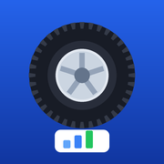

ระบบสต็อกยาง
Automax · Wiztire
ยังไม่ได้ใส่ลิงก์ระบบในไฟล์ index.html
เข้าระบบ
📱 iPhone — เพิ่มไอคอนบนหน้าจอ
- เปิดหน้านี้ใน Safari
- กดปุ่ม แชร์ (สี่เหลี่ยมมีลูกศรขึ้น)
- เลือก เพิ่มไปยังหน้าจอโฮม → เพิ่ม
🤖 Android — เพิ่มไอคอนบนหน้าจอ
- เปิดหน้านี้ใน Chrome
- กด ⋮ มุมขวาบน
- เลือก เพิ่มลงในหน้าจอหลัก → เพิ่ม
ครั้งต่อไปกดไอคอน "สต็อกยาง" บนหน้าจอ จะเข้าระบบทันที